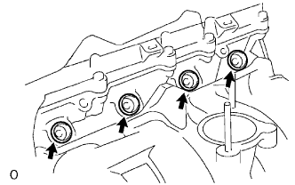
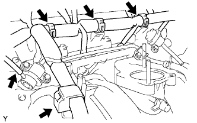
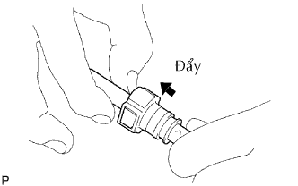
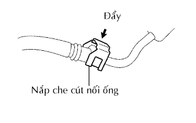

VÒI PHUN NHIÊN LIỆU > LẮP |
| 1. LẮP CỤM VÒI PHUN |
 |
Lắp một cách nhiệt vào vòi phun.
Bôi một lớp mỏng mỡ hoặc xăng lên gioăng chữ O mới và lắp nó vào vòi phun.
 |
Bôi một lớp mỏng mỡ hoặc xăng lên chỗ lắp mà ống phân phối tiếp xúc với gioăng chữ O.
Để lắp vòi phun vào ống phân phối, hãy ấn vòi phun vào trong khi xoay sang phải và sang trái một chút.
Hãy định vị giắc vòi phun sao cho nó quay xuống dưới.
| 2. LẮP CỤM ỐNG PHÂN PHỐI |
|  |
Lắp 4 bạc cách vào nắp quy lát.
 |
Lắp ống phân phối nhiên liệu cùng với 4 vòi phun và 2 đệm cách bằng 2 bu lông.
Lắp 4 giắc vòi phun.
|  |
Lắp 4 kẹp và dây điện vào ống phân phối.
Lắp ống chân không.
| 3. NỐI ĐƯỜNG ỐNG NHIÊN LIỆU |
 |
Lắp ống nhiên liệu số 2 vào bộ điều áp nhiên liệu.
Lắp ống nhiên liệu số 1 vào bộ giảm rung nhiên liệu.
|  |
Kiểm tra rằng không có hư hỏng hoặc vật thể lạ bám vào chỗ nối ống.
Gióng thẳng trục của cút nối với trục của ống. Hãy đẩy ống vào cút nối cho đến khi cút nối phát ra tiếng kêu “tách”. Nếu chỗ nối bám chặt, hãy bôi một ít dầu động cơ sạch vào đầu ống.
 |
Sau khi đã thực hiện xong việc nối ống, thử kéo tách ống và cút nối và xác nhận rằng nó đã được nối chắc chắn.
|  |
Cài các vấu hãm vào cút nối bằng cách ấn nắp xuống, như được chỉ ra trên hình vẽ.
| 4. LẮP CỤM CỔ HỌNG GIÓ |
 |
Lắp gioăng mới lên đường ống nạp.
 |
Lắp cụm cổ họng gió bằng 2 bulông và 2 đai ốc.
Nối 2 ống nước đi tắt vào cổ họng gió.
Ngắt giắc nối cảm biến vị trí bướm ga và giắc nối môtơ điều khiển.
| 5. LẮP ỐNG NỐI NẠP KHÍ |
Lắp ống nối nạp khí bằng 2 bu lông, và xiết chặt 2 kẹp ống.
| 6. NỐI CÁP ÂM VÀO CỰC ÂM ẮC QUY |
| 7. TIẾN HÀNH THIẾT LẬP BAN ĐẦU |
Tiến hành thiết lập ban đầu (Xem trang Kích chuột vào đây).
| 8. KIỂM TRA RÒ RỈ NHIÊN LIỆU |
Nối máy chẩn đoán với giắc DLC3.
Bật khoá điện ON.
Bật công tắc chính của máy chẩn đoán ON.
Hãy chọn thử kích hoạt và truy nhập và menu sau: Powertrain / Engine and ECT / Active Test / Control the Fuel Pump / Speed.
Kiểm tra rò rỉ nhiên liệu.
Kiểm tra rằng không có rò rỉ nhiên liệu trong hệ thống nhiên liệu sau khi tiến hành bảo dưỡng.